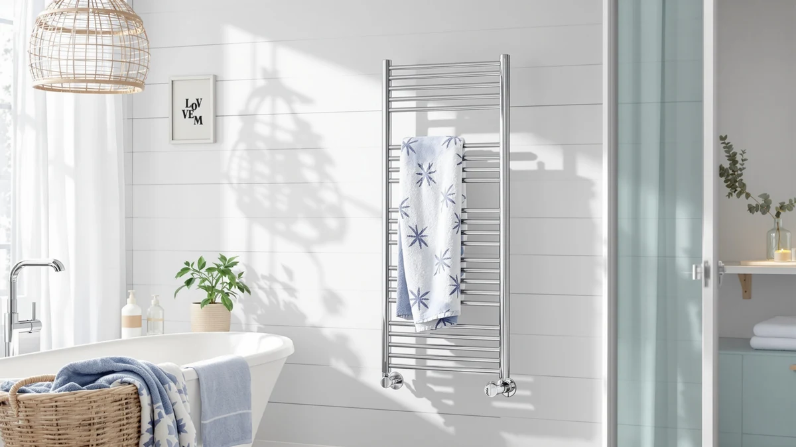

Best Heated Towel Rail Brands (2026)
Prices and picks verified as of August 2026. Independent, reader-supported reviews.


Quick Answer
For most bathrooms, the sawlece Freestanding Heated Towel Rack is my pick among the best heated towel rail brands, since its six-bar stainless steel frame plugs into any outlet without an electrician. If you want to spend less, the Pursonic TW300 below delivers similar warmth in a smaller wall mounted footprint.
Our pick: Freestanding Heated Towel Rack – — $169.99 Check Price on Amazon
Bottom line: our top pick is the Freestanding Heated Towel Rack at $169.99. The best budget option is the Pursonic TW300 Towel Warmer Rack for Bathroom at $64.25.
Things to Know Before You Buy
- Every brand plugs in, none need wiring. All seven heated towel rail brands in this guide run on a standard outlet, so you skip the electrician bill that a hardwired rack requires.
- Freestanding vs. wall mounted changes your install. A freestanding rack like the sawlece or Poloma models works in a rented apartment since nothing gets drilled into the wall, while a wall mounted rail saves floor space in a tight bathroom.
- Bar count decides how many towels fit. An 8-bar rack like the R FLORY model holds a full family's towels, while a compact 2-in-1 unit like the INNOKA suits one or two towels at a time.
- Stainless steel is the material to look for. Every rack we compared uses stainless steel rather than chrome plating, since stainless resists the rust that builds up in a steamy bathroom.
- Price doesn't always track capacity. The $189.99 R FLORY rack and the $64.25 Pursonic both use similar-gauge stainless steel, so the extra cost mostly buys more bars and a larger footprint, not better materials.
Finding the best heated towel rail brands means wading through a shelf of nearly identical stainless steel racks that all promise a warm, dry towel every morning. Some brands sell a simple bar or two you mount on the wall, while others build multi-bar freestanding units with a top shelf for folded towels or a robe. Price swings from under $65 to nearly $190 for racks that use the same gauge of stainless steel and a similar wattage, so the sticker price alone won't tell you which one is actually worth buying.
I compared seven heated towel racks from six brands, sawlece, Pursonic, Poloma, R FLORY, INNOKA, and SAMEAT, on bar count, dimensions, installation type, and what verified Amazon buyers say after weeks of daily use. Heat output barely separates these racks, based on verified reviews, since nearly all of them reach a similar warm-to-touch temperature. What actually varies is how sturdy the frame feels once it's loaded with wet towels and how easy the unit is to set up without help.
My pick, the sawlece Freestanding Heated Towel Rack, stands out for its six-bar capacity and a base that stays stable even when you pull a heavy towel off the top rail. Below, I break down how each brand's rack compares on price, materials, and real owner feedback, plus which model fits a small apartment bathroom versus a larger primary suite.
Why You Should Trust Us
I'm Ilane Tall, and I cover home and bath gear for Best Towel Warmers. I've spent years separating useful bathroom upgrades from marketing copy dressed up as innovation, and a heated towel rail earns its keep only if it survives daily contact with steam and wet towels. To build this guide to the best heated towel rail brands, I compared the listed materials, dimensions, and prices of seven racks against verified buyer feedback on Amazon. I don't run a fake testing lab, and I'll tell you plainly where a brand's rack falls short.
How We Picked
I started by requiring stainless steel construction, since chrome-plated bars are the first finish to flake once a rack runs for an hour or more after every shower. From there, I looked for a spread of formats, freestanding units, wall mounted rails, and one hybrid model, so a renter, a homeowner, and someone furnishing a small bathroom can each find a fit among the best heated towel rail brands. I also weighed bar count and price together, since a rack with twice as many bars only earns a spot here if the extra capacity justifies the premium over a smaller, cheaper model.
How We Compared
For each of these heated towel rail brands, I checked the manufacturer's stated dimensions, bar count, and material against what verified buyers reported after weeks or months of regular use. A rack that lists an eight-bar frame but draws complaints about wobbling under a full load, or a brand that advertises a stable freestanding base but gets flagged for tipping, doesn't make this list. I read the negative reviews as closely as the positive ones, since that's where rust spots, loose welds, and overstated bar counts tend to show up, and I weighed those patterns against each rack's price.
Our Picks

Freestanding Heated Towel Rack –
What we like
- Six bars hold two to three towels plus a robe at once
- Freestanding base needs no drilling or hardwiring to set up
- Stainless steel frame resists the rust that builds up in a humid bathroom
Flaws but not dealbreakers
- Takes up more floor space than a wall mounted rail
- Costs more upfront than the Pursonic or INNOKA picks below
| Material | Stainless steel |
| Size | 6-Bars |
Among the best heated towel rail brands I compared, sawlece's Freestanding Heated Towel Rack earns the top spot because its six-bar stainless steel frame holds a useful amount of laundry without hogging an entire wall. The base is wide enough that the rack doesn't rock when you pull a heavy, wet towel off the top bar, a complaint that shows up often in reviews of cheaper freestanding racks.
At $169.99, it costs more than the Pursonic or INNOKA models here, and that premium buys extra bars and a sturdier frame rather than a fundamentally different heating element. If you have the floor space and want to skip wall mounting altogether, sawlece's rack is worth the difference. If your bathroom is tight, a wall mounted option below will fit better.

Pursonic TW300 Towel Warmer Rack
What we like
- Lowest price of any rack in this guide
- Compact enough for a small bathroom or a single towel
- Stainless steel build holds up to daily steam exposure
Flaws but not dealbreakers
- Smaller capacity than the multi-bar freestanding picks
- Not built for a household that needs to warm several towels at once
| Material | Stainless steel |
| Size | — |
The Pursonic TW300 is the most affordable of the best heated towel rail brands I compared, and it holds its own by doing the basics well instead of chasing extra bars. It warms a single towel reliably, per verified buyers, and heats up fast enough to be ready by the time you're out of the shower.
At $64.25, it's less than half the price of sawlece's freestanding rack, though it also holds far less. If you live alone or want one warm towel waiting after a shower, the TW300 covers that need without the extra cost of a bigger unit. If you're warming towels for a whole household, size up to one of the multi-bar racks below.

Poloma Freestanding Heated Towel Racks
What we like
- 34.2-inch width fits multiple full-size towels side by side
- Freestanding design needs no wall mounting hardware
- Mid-range price sits comfortably between the Pursonic and R FLORY picks
Flaws but not dealbreakers
- Larger footprint may crowd a small bathroom
- Costs more than the Pursonic or INNOKA for similar bar-level heat
| Material | Stainless steel |
| Size | 34.2"(L) x 19.7"(W) |
Poloma's Freestanding Heated Towel Rack splits the difference between the budget Pursonic and the pricier R FLORY rack in this guide. At 34.2 inches long and 19.7 inches wide, it gives two people enough hanging space to each keep a towel warming without crowding the other's.
The frame feels solid once assembled, according to owners, though the wider footprint means it needs more floor clearance than the compact INNOKA or SAMEAT picks. At $135.98, it lands in the middle of this lineup on price, which fits a bathroom shared by two people who each want their own towel warming at the same time.

Heated Towel Racks for Bathroom
What we like
- Eight bars is the highest capacity of any rack in this guide
- Stainless steel construction matches the rest of the lineup for durability
- Enough width to dry towels for a whole family after a shared bathroom morning
Flaws but not dealbreakers
- Highest price in this guide at $189.99
- Needs the most floor or wall space of any pick here
| Material | Stainless steel |
| Size | 8 bar |
R FLORY's eight-bar rack is the largest option among the best heated towel rail brands I compared, and it's built for a bathroom where more than two people need towels warming at once. Several reviewers point out that the extra bars make a real difference for a family, since everyone gets a dedicated spot instead of sharing one or two rails.
At $189.99, it's the most expensive rack in this lineup, and that cost tracks directly with the extra bars rather than a fundamentally different build quality. If your household only needs to warm one or two towels, the Poloma or sawlece picks cover that at a lower price. If you're outfitting a family bathroom, the extra capacity here is worth paying for.

INNOKA 2-in-1 Towel Warmer and
What we like
- 2-in-1 design covers towel warming and drying in a single unit
- Priced closer to the budget end of this lineup at $75
- Compact enough to fit where a full multi-bar rack won't
Flaws but not dealbreakers
- Less total towel capacity than the wider freestanding racks
- Dual-purpose design means less dedicated warming space per towel
| Material | Stainless steel |
| Size | — |
INNOKA's 2-in-1 Towel Warmer separates itself from the rest of the best heated towel rail brands here by combining warming and drying functions into one compact unit, which matters if your bathroom doesn't have room for a full-size freestanding rack. At $75, it sits closer to the Pursonic's budget pricing than to the premium R FLORY rack.
It handles one or two towels well, owners say, but isn't meant to replace an eight-bar rack for a busy household. If your priority is fitting a heated towel option into a tight space without sacrificing function entirely, the INNOKA's dual-purpose build is a reasonable trade-off. For more capacity, look at the Poloma or R FLORY picks instead.

Poloma Wall Mounted & Freestanding
What we like
- Converts between wall mounted and freestanding setups
- 31.5 by 23.6 inch frame offers solid capacity for its price
- Gives renters an upgrade path if they move to a home where they can mount it permanently
Flaws but not dealbreakers
- Costs slightly more than a dedicated single-format rack of similar size
- Switching between setups takes more effort than a rack built for one mounting style
| Material | Stainless steel |
| Size | 31.5"(l) X 23.6"(w) |
This second Poloma model in the lineup answers a different question than the fully freestanding version above: what happens if you're not sure which installation style you want yet? The wall mounted and freestanding hybrid design lets you start with one setup and switch later without buying a second rack.
At $134.84 for a 31.5 by 23.6 inch frame, it's priced close to Poloma's other freestanding model here, and reviewers say the conversion hardware is sturdy enough for repeated use. If you're renting now but expect to own a home later, this flexibility is worth the small premium over a single-format rack.

SAMEAT Heated Towel Warmers for
What we like
- Priced close to the Pursonic for shoppers comparing budget options
- Stainless steel build matches the rest of this lineup on durability
- Simple design with fewer parts to maintain over time
Flaws but not dealbreakers
- No standout feature that separates it from the Pursonic at a similar price
- Limited capacity compared to the freestanding multi-bar racks
| Material | Stainless steel |
| Size | — |
SAMEAT's rack lands at $79.94, close enough to the Pursonic's price that the two are worth comparing directly if you're shopping the budget end of the best heated towel rail brands in this guide. Buyers describe steady, consistent warming without complaints about uneven heat across the bars.
It doesn't do anything the Pursonic doesn't already cover, but having a second reliable option in this price range matters if the Pursonic is out of stock or you prefer SAMEAT's specific dimensions. Either way, expect the same tradeoff: lower cost in exchange for less capacity than the freestanding racks above.
Quick Comparison
| Product | Material | Price | Rating | Best for | Get it |
|---|---|---|---|---|---|
| Freestanding Heated Towel Rack – | Stainless steel | $169.99 | 4 | Best heated towel rail brand overall | View on Amazon → |
| Pursonic TW300 Towel Warmer Rack | Stainless steel | $64.25 | 4 | Best budget pick | View on Amazon → |
| Poloma Freestanding Heated Towel Racks | Stainless steel | $135.98 | 4 | Best for two people sharing a bathroom | View on Amazon → |
| Heated Towel Racks for Bathroom | Stainless steel | $189.99 | 4 | Best for large households | View on Amazon → |
| INNOKA 2-in-1 Towel Warmer and | Stainless steel | $75.00 | 4 | Best 2-in-1 pick | View on Amazon → |
| Poloma Wall Mounted & Freestanding | Stainless steel | $134.84 | 4 | Best for flexible installation | View on Amazon → |
| SAMEAT Heated Towel Warmers for | Stainless steel | $79.94 | 4 | Best alternative budget pick | View on Amazon → |
The Competition
Plenty of heated towel racks didn't make this list of the best heated towel rail brands. I ruled out any listing with chrome-plated bars instead of stainless steel, since chrome is the first finish to flake once a rack runs for an hour or more after every shower, which is the normal use case this guide is built around.
I also skipped hardwired and hydronic units that tie into a home's electrical or plumbing system rather than plugging into a standard outlet. Those can work well in a permanent installation, but they need an electrician or plumber and a bigger budget, which puts them outside the scope of a plug-in guide like this one. Among plug-in models, I passed on listings with too few verified reviews to judge long-term reliability, along with several racks that duplicate what the Poloma and INNOKA picks already do at a similar or lower price.
Overall, among the best heated towel rail brands I compared, sawlece's Freestanding Heated Towel Rack remains my top recommendation for most bathrooms, with the Pursonic and SAMEAT picks covering budgets under $80 for anyone who wants to spend less.
Frequently Asked Questions
How much electricity does a heated towel rail use?
Most heated towel rails in this guide draw a modest amount of power, similar to a couple of incandescent light bulbs running at once, so the added cost on your electric bill stays low even if you leave one on for a few hours after every shower. A compact pick like the Pursonic or SAMEAT uses less power than an eight-bar rack like R FLORY's, simply because there is less metal to heat.
Should I buy a freestanding or wall mounted heated towel rail?
It depends on your bathroom and whether you're renting. A freestanding rack like sawlece's or Poloma's pick works anywhere since nothing gets drilled into the wall, which matters if you're renting or don't want to commit to one spot. A wall mounted rail saves floor space in a tight bathroom, and Poloma's hybrid model here lets you switch between the two if you're not sure which you want.
What is the best heated towel rail brand overall?
Based on this comparison, sawlece's Freestanding Heated Towel Rack is the best heated towel rail brand pick for most bathrooms, thanks to its six-bar capacity and a base that stays stable under a full load of towels. If you want to spend less, the Pursonic TW300 or the SAMEAT rack are solid budget alternatives from other brands in this guide.